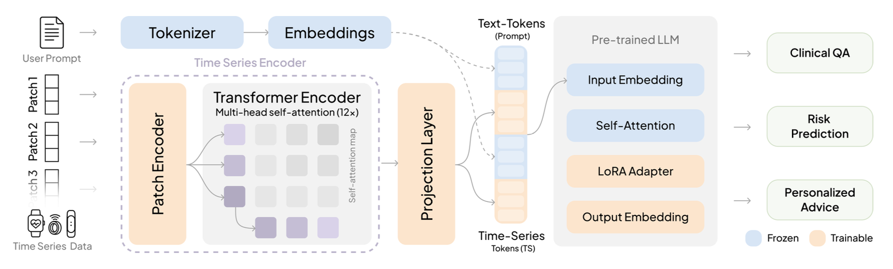
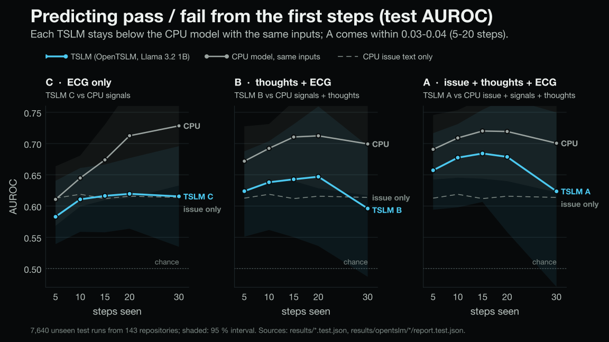
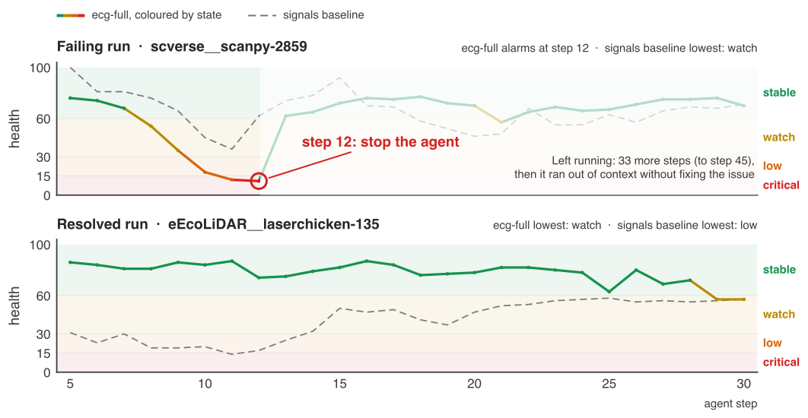
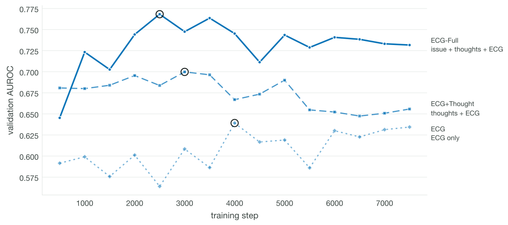

Agent ECG: Warning Early When a Coding Agent Is Going to Fail
TimeNet Hackathon, Round 1 · 2026

Abstract
Coding agents fail on most real GitHub issues, and the verdict usually comes only at the end of a run. We read an agent's run step by step, like an ECG reads a heartbeat, and ask after every step whether the run will resolve its issue. We contribute a TimeNet dataset of 235,978 checkpoints from 76,182 SWE-agent runs, where each checkpoint holds the first 5 to 30 steps of a run that is still going: 19 per-step series, the agent's thoughts and the issue text. We fine-tune three time-series language models (TSLMs), language models that read time series alongside text, built with OpenTSLM on Llama 3.2 1B. Each reads different inputs and is compared with a classical benchmark that reads exactly the same inputs, on 7,640 runs from 143 repositories never seen in training. The behaviour signal grows over the run, and the best TSLM comes within 0.03–0.04 AUROC of the best benchmark, though every TSLM stays below the benchmark with the same inputs. Replayed as a live monitor on 600 unseen runs, the alarms of our full model are right 96 % of the time and fire at a median step of 6.
Demo
The Agent ECG
Our TimeNet connector for nebius/SWE-agent-trajectories (TimeNet PR #832) cuts every run into checkpoints: the first 5, 10, 15, 20 or 30 steps of a run that is still going. A checkpoint never contains the end of the run, so no input gives the outcome away. We call the 19 series recorded at every step the agent's ECG: like a heart ECG, a few lines over time that a trained reader scans for warning signs. It is a multichannel event trace, not a waveform:
4 lengths
the agent's thought, its command, the environment's reply, and the whole conversation so far
5 actions
edit, create a file, run code, read, search
5 replies
rejected edit, traceback, command error, timeout, silent success
5 patterns
repeated command, same file as the last edit, and whether an edit touches a source, test or own file
The data is split by repository, so no repository or issue appears in two splits. Most runs fail, and the longer a run goes on, the more likely it is to fail:
| Steps seen | Runs still going | Of those, fail |
|---|---|---|
| 5 | 76,182 | 83 % |
| 10 | 59,708 | 86 % |
| 15 | 43,550 | 91 % |
| 20 | 34,059 | 94 % |
| 30 | 22,479 | 96 % |
Model
OpenTSLM (Langer et al., 2025) extends pretrained language models to read time series as a native input. We use its SoftPrompt variant, which the paper recommends for short series: a small encoder turns each of our 19 series into tokens that sit in the prompt next to the text, and only the encoder, a projection layer and LoRA adapters are trained (about 14 M parameters). We start from the released Llama 3.2 1B checkpoint at the end of the paper's training curriculum (OpenTSLM/llama-3.2-1b-ecg-sp).
We train three models on nested inputs: ecg reads only the 19 series, ecg-thought adds the agent's thoughts, and ecg-full adds the issue and learns two more tasks, how the run will end and a short status report.

Predicting Pass or Fail from the First Steps
We fine-tuned three OpenTSLM models on different inputs and gave each one a classical benchmark that reads exactly the same inputs. All scores are AUROC on the unseen test repositories, reported separately at each checkpoint; 0.5 is chance.

| Model | Reads | 5 | 10 | 15 | 20 | 30 |
|---|---|---|---|---|---|---|
| Benchmark signals | the ECG signals | 0.611 | 0.645 | 0.674 | 0.712 | 0.728 |
| Benchmark thoughts | the agent's thoughts | 0.680 | 0.703 | 0.710 | 0.701 | 0.701 |
| Benchmark issue + signals + thoughts | everything | 0.691 | 0.709 | 0.720 | 0.719 | 0.700 |
| Benchmark issue only | the issue text | 0.613 | 0.619 | 0.612 | 0.616 | 0.614 |
| TSLM ecg | the ECG | 0.583 | 0.611 | 0.616 | 0.620 | 0.615 |
| TSLM ecg-thought | thoughts + ECG | 0.624 | 0.638 | 0.643 | 0.647 | 0.596 |
| TSLM ecg-full (3 tasks) | issue + thoughts + ECG | 0.657 | 0.677 | 0.684 | 0.679 | 0.624 |
Column headers are the number of steps seen. The shaded cell is the best score at that step.
- The behaviour signal grows over the run. The signals benchmark climbs from 0.611 at 5 steps to 0.728 at 30. A model that reads only the issue text stays flat between 0.61 and 0.62.
- ecg-full comes within 0.03–0.04 of the best benchmark at 5–20 steps. The gap is not significant there (paired bootstrap over test repositories).
- Each TSLM scores below the benchmark with the same inputs. ecg, which reads only the series, stays between 0.58 and 0.62, about the level of the issue-only model.
As a Live Monitor
A monitor sits on top of a model and turns its prediction at every step into something an operator can act on: a health score from 0 to 100 that compares the run with runs of the same age, a state (stable, watch, low, critical), and an alarm after 2 critical steps in a row. We replayed 600 unseen test runs step by step through two monitors: one on ecg-full, and one on the signals benchmark. The runs were all 239 resolved test runs with at least 20 steps, plus 361 random failing ones; neither monitor chose them.

| Monitor | Failing runs flagged | Median alarm step | False alarms | Alarms that were right* |
|---|---|---|---|---|
| ecg-full | 32.4 % | 6 | 18.4 % | 95.8 % |
| signals benchmark | 34.1 % | 9 | 14.6 % | 96.8 % |
* At the natural share of resolved runs among runs that last 20 steps (7.1 %). False alarms are the share of resolved runs flagged.
The two monitors flag mostly different runs: 66 only by ecg-full, 72 only by the signals benchmark, and 51 by both. Part of ecg-full's head start comes from the issue text: half of its alarms fire at the earliest possible step, and they cluster by issue. The run in the teaser is one where ecg-full's alarm rests on behaviour, and ecg-full spares the other runs of the same issue.

ecg-full's Other Two Tasks
Besides pass or fail, ecg-full learns to predict how a run will end (one of six endings) and to write a short status report whose last sentence forecasts the rest of the run. Scores on the full test split (23,520 checkpoints), pooled over checkpoints:
| Model | Ending accuracy | Ending macro-F1 | Report format ok | Steps-left error mean (median) | Pass/fail bal. accuracy |
|---|---|---|---|---|---|
| ecg-full | 0.662 | 0.222 | 99.7 % | 17.8 (9) | 0.568 |
| signals benchmark | 0.655 | 0.225 | 100.0 % | 14.3 (6) | 0.614 |
| majority | 0.494 | 0.110 | 100.0 % | 16.7 (10) | 0.500 |
The majority benchmark always predicts the most common ending, the median remaining steps, and "will not resolve".
ecg-full is about level with the signals benchmark on the ending and writes reports in the right format almost every time. Its forecast is weaker: its remaining-steps error and its pass/fail call in the report both trail the signals benchmark.
Limitations
- Classical benchmarks are strong on this task. With the same inputs, the classical benchmarks still score above each TSLM. ecg-full comes closest: within 0.03–0.04 AUROC at 5–20 steps, a gap that is not statistically significant.
- How much ecg-full uses the ECG is still open. A test that shuffles its series between runs is planned. ecg, which reads only the ECG, scores above chance.
Training
Each model was fine-tuned on one L40S. Training took 2.8 h (ecg), 5.3 h (ecg-thought) and 7.1 h (ecg-full), 15.2 GPU-hours in all. OpenTSLM's eager attention ran out of memory on ecg-full's long prompts; switching to PyTorch SDPA (the same math) made it fit and cut its training time by more than half.

BibTeX
@misc{guerel2026agentecg,
title = {Agent ECG: Warning Early When a Coding Agent Is Going to Fail},
author = {G{\"u}rel, Bar{\i}{\c{s}} and Lohscheller, Maximilian and
Mellal, Ziyad and Ritter Vidal, Etienne},
year = {2026},
note = {TimeNet Hackathon, Round 1. Dataset: OpenTSLM/TimeNet\#832}
}References
Langer, P., Kaar, T., Rosenblattl, M., Xu, M. A., et al. (2025). OpenTSLM: Time-Series Language Models for Reasoning over Multivariate Medical Text- and Time-Series Data. arXiv:2510.02410.